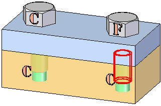
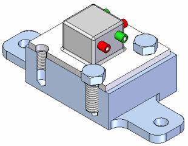

Options page (Interference Options dialog box)
Controls how parts are checked for interference and defines the type of output you want from the analysis.
- Check Select Set 1 Against
-
Specifies which parts are checked for interference against select set 1.
- Select Set 2
-
Checks for interference between one part or set of parts and another part or set of parts.
- All Other Parts In The Assembly
-
Checks for interference between one part or set of parts and all the other parts in the assembly.
- Parts Currently Shown
-
Checks for interference between one part or set of parts and all the other parts that are currently displayed in the assembly.
- Itself
-
Checks for interference between the parts in set 1.
- Output Options
-
Specifies the type of output you want from the interference analysis.
- Generate Report
-
Outputs the results of the analysis to a text report that can be configured by setting options on the Report tab.
- Interfering Volumes
-
Specifies how the interfering volumes are managed.
- Show
-
Temporarily displays the Boolean intersections of interfering parts in the graphic window. When you exist the command, the interference display is no longer displayed.
- Save As Part
-
Saves the interfering volumes as new parts documents that are added to the assembly. Each new part document is grounded in the assembly. You can highlight, hide, and delete the parts using Assembly PathFinder.
- Hide Parts Not In Select Sets 1 And 2
-
Hides parts that are not part of either set and are therefore not included in the interference analysis. The hidden parts are redisplayed when you exit the command.
- Highlight Interfering Parts
-
Highlights interfering parts. When this option is set, the parts which interfere are highlighted in the graphic window. This can make it easier to find the interfering parts in a large assembly.
- Check Interfering With Construction Geometry
-
Checks interference with solids and surface constructions. Surface geometry does not have to be displayed during processing.
- Dim Parts With No Interference
-
Dims any parts that do not interfere with another part. This can make it easier to find the interfering parts in a large assembly. The dimmed parts are redisplayed when you exit the command.
You can set the dim properties using the Dim Surrounding Parts When In-Place Activated option on the View tab in the Solid Edge Options dialog box.
- Hide Parts With No Interference
-
Hides any parts that do not interfere with another part. This can make it easier to find the interfering parts in a large assembly. The hidden parts are redisplayed when you exit the command.
- Ignore Interferences Between Matching Threads
-
Specifies whether you want to report interference between a threaded cylinder and a threaded hole whose thread characteristics match. To determine if the thread characteristics match, Solid Edge compares the nominal diameter and thread type values for the threaded cylinder and threaded hole.
These values are assigned using the Holes.txt file when you construct threaded features. For more information, see the Threaded Features Help topic.
When this option is set:
-
Interference is not detected when both the nominal diameter and thread type match between a threaded cylinder and a threaded hole.
-
Interference is detected if the nominal diameter matches, but the thread type does not match.
For example, the nominal diameter and the thread type match for the bolt and threaded hole on the left. For the bolt and threaded hole on the right, the nominal diameter matches, but the thread type does not match. When you set the Ignore Interferences Between Matching Threads option, interference is detected only for the bolt and threaded hole on the right.

When this option is cleared, interference is detected between a threaded cylinder and a threaded hole with matching thread characteristics.
Note:Interference is always detected if a bolt is too long for a blind hole, or if the bolt diameter is too large for a non-threaded hole.
For threads constructed in version 20 or higher, if the thread extent value is less than the full length of the cylinder, check interference always reports interferences where the threaded portion of the bolt extends past the threaded portion of the hole, as shown.

-
- Ignore Threaded Fasteners Interfering With Non-threaded Holes
-
When this option is set, the interference between a threaded cylinder and a non-threaded hole is ignored when checking interference. This option is useful for ignoring interference when using self-tapping fasteners in unthreaded holes.
When this option is cleared, interference is detected if the nominal diameter of the bolt is larger than the diameter of the hole.
Note:Interference is always detected if a bolt is too long for a blind hole.
How do I
Move a part in an assemblyMove multiple parts in an assembly
Check for interference between parts in an assembly
Learn more
Analyzing movement and detecting collisions in assembliesMoving and mirroring rules for assembly bodies
Checking interference on parts
Look up more details
Move Components commandMove Components command bar
Move Options dialog box
Drag Component command
Steering Wheel
Check Interference command
Drag Component command bar
Analysis Options dialog box
Check Interference command bar
Report page (Interference Options dialog box)
Interference Options dialog box